Research, lived experience, and regulation.
Technology advances and the ways in which we view and relate to autism are constantly changing. Burble is continually monitoring news and developments and tries to bring these to you here without bias or agenda. If you have news you would like us to share with the community, let us know.
The Communication Gap: New Research on Autistic–Neurotypical Mismatch
The study found that communication challenges between autistic and non-autistic people may stem less from individual deficits and more from unconscious differences in communication styles.
Read article →Storythinking: How Narrative Builds Creativity, Resilience, and Regulated Minds
Read article →
How Nonverbal Autistic Children Gain Speech: Why Regulation Comes First
Read article →
Brain Organoids Uncover Shared Mechanisms in Autism's Genetic Puzzle
Read article →
Living Beyond Words: What It's Like to Have Nonspeaking Autism
Read article →
From "Deficit" to Dignity - Changing Attitudes Towards Autism
Read article →Supporting Families Through Shifting Concerns in Autism Development
Read article →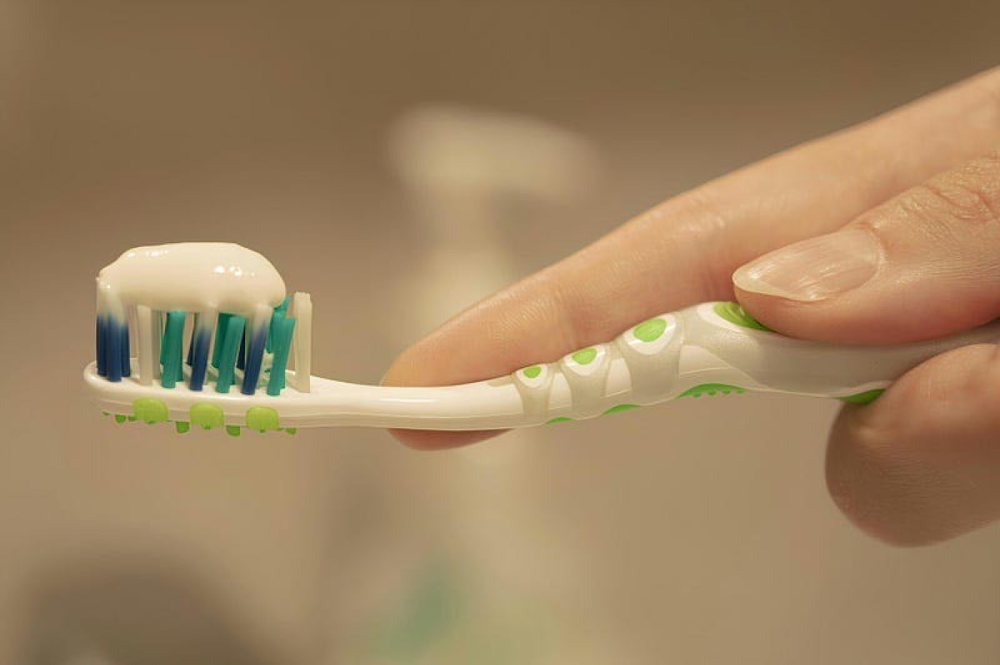
Mouth & Mind: How Oral Health Shapes Well-Being for Autistic Children and Why It Matters
Read article →
When Playtime Meets AI: What We Need to Know About AI-Powered Toys for Kids
Read article →
Unlocking Communication: New Research to Support Children with Autism
Read article →
New Science Shows Imagination Can Change the Brain
Read article →
If Your Adolescent Has Autism: A New Evidence-Based Guide for the Teen Years
Read article →Scientific Insight: What Circadian Rhythms Are, and Why Disruption Matters
Read article →When the Environment Doesn't Love Them Back: Removing Barriers So Autistic Kids Can Move, Play, and Belong
Read article →Why Communication Is Harder for Some Autistic Individuals - And What New Brain Science Shows
Read article →When "Smart Toys" Might Short-Circuit Creativity: What AI-Powered Toys Mean for Young Minds
Read article →When the Blue Lights Flash: Making Traffic Stops Safer for Drivers on the Autism Spectrum
Read article →Mapping the Genetic Landscape of Autism: What Parents, Educators & Caregivers Should Know
Read article →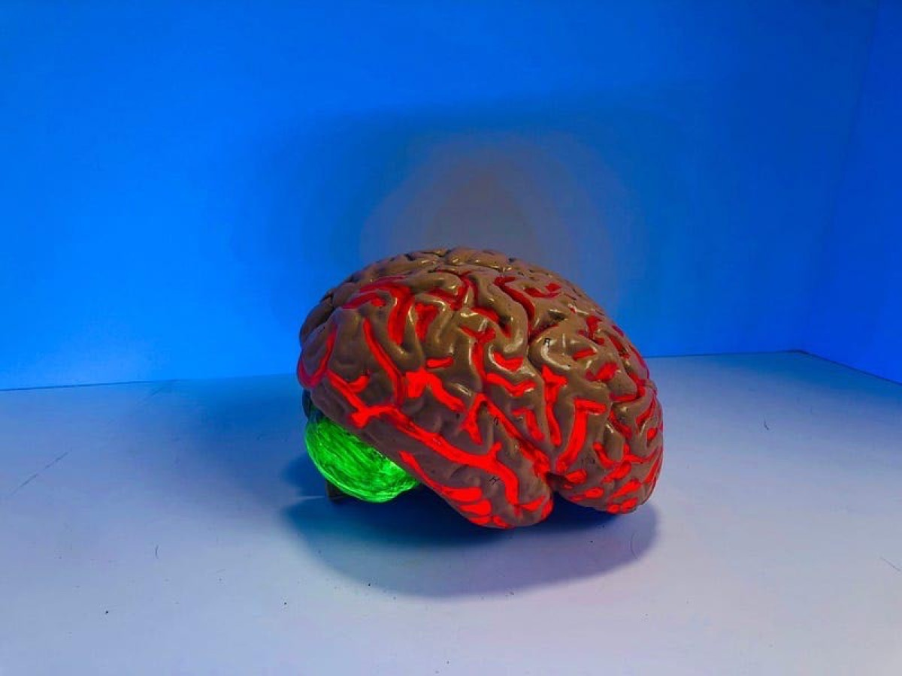
Shared Brain Signatures in Autism and ADHD: What Educators, Parents & Researchers Should Know
Read article →Creativity Is For Everyone: What David Kelley's 'Brief But Spectacular' Moment Teaches Us About Design and Innovation
Read article →The Softness of the Mind: How Brain Mechanics May Shape Learning and Development
Read article →When Imagination Becomes the Greatest Gift: A Poetic Holiday Short Film
Read article →Unlocking Hidden Patterns: What the Latest Research Reveals About Nonverbal Learning Disability and How to Improve Diagnosis & Care
Read article →Pause, Reflect, Thrive: A Neurodiversity-Affirming Intervention for Autistic Adults
Read article →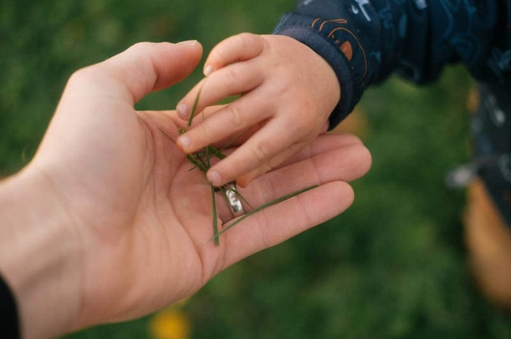
Bridging the Gap: How Child Neurologists Can Uncover Motor Challenges in Autism
Read article →Creativity as Medicine: How Burble's Imagination-Focused Design Aligns with Brain Health Science
Read article →Screens, Boundaries & Imagination: How Burble Builds Better Play Between Technology
Read article →Understanding Autistic Suicidal Risk: What Recent Research Reveals & How We Can Act
Read article →Leucovorin & Autism: What's the Evidence, What Do We Know So Far?
Read article →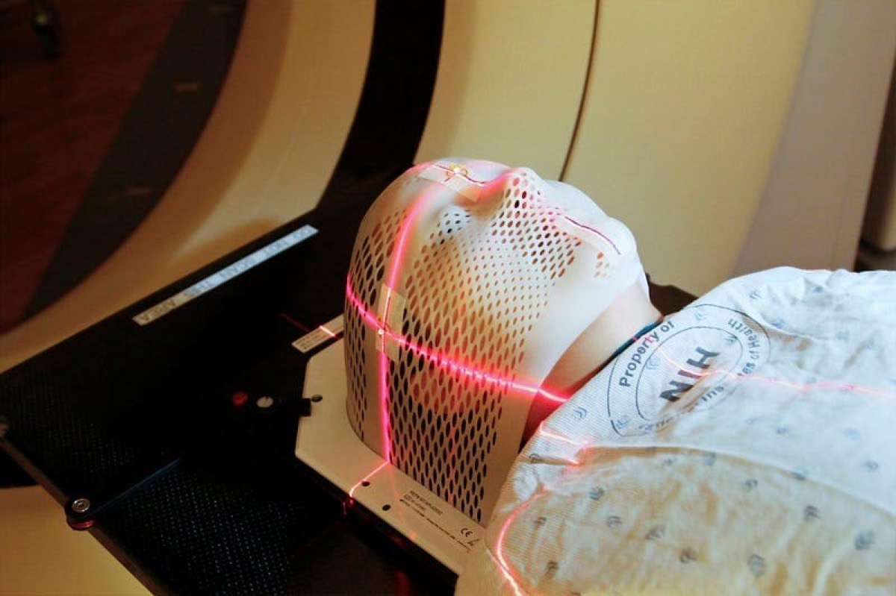
Beyond Brains & Algorithms: What AI Detection Means
Read article →Gut Feelings: How Persistent Digestive Woes in Autistic Kids Impact Sleep, Sensory Processing & How We Can Help
Read article →Quiet Comfort at the Table: How Autism Eats Inspires Dining Without Judgment
Read article →Difference, Not Deficit: Why Neurodivergent Communication Deserves to Be Valued
Read article →How Sleep Locks in Learning - and How Burble's Sleep Mode Helps Your Brain Do Just That
Read article →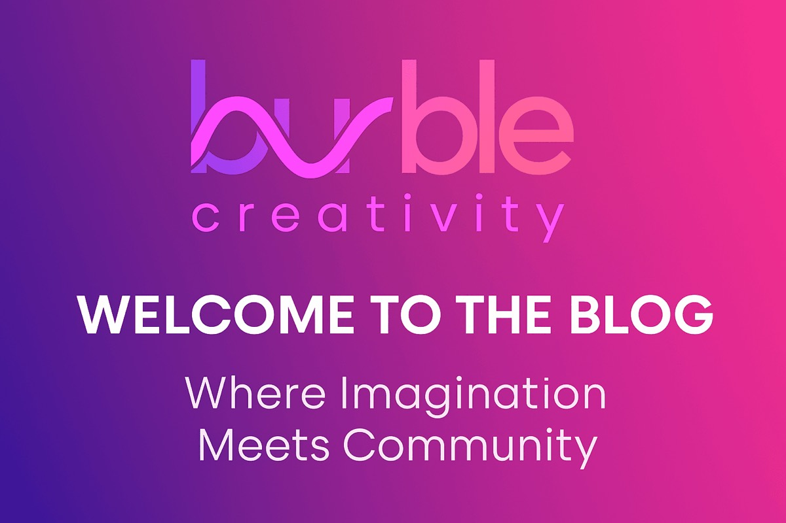
From Advocacy to Action: How Burble Builds Community and Shares Stories that Matter
Read article →Bridging Gaps in Mental Health Care for Autistic Adults - and How Sensory Immersion Could Help
Read article →From Cardboard Castles to Light-Wrapped Story Tents: How Play's Imagination Evolves, Yet Endures
Read article →A Lifetime Unseen: Why 9 in 10 Autistic Adults Over 50 Were Never Diagnosed
Read article →From Crayola Carts to StoryTents: How Creative Innovation Sparks Imagination in Every Form
Read article →The High Cost of Autism Care: Families Face Nearly 10 Times Greater Healthcare Expenses
Read article →Broadening the Lens: Why Autism Research Needs Greater Sample Diversity in Multisensory Studies
Read article →Empowering Independence: UIndy Lab Tackles Financial Literacy Gap for Autistic Young Adults
Read article →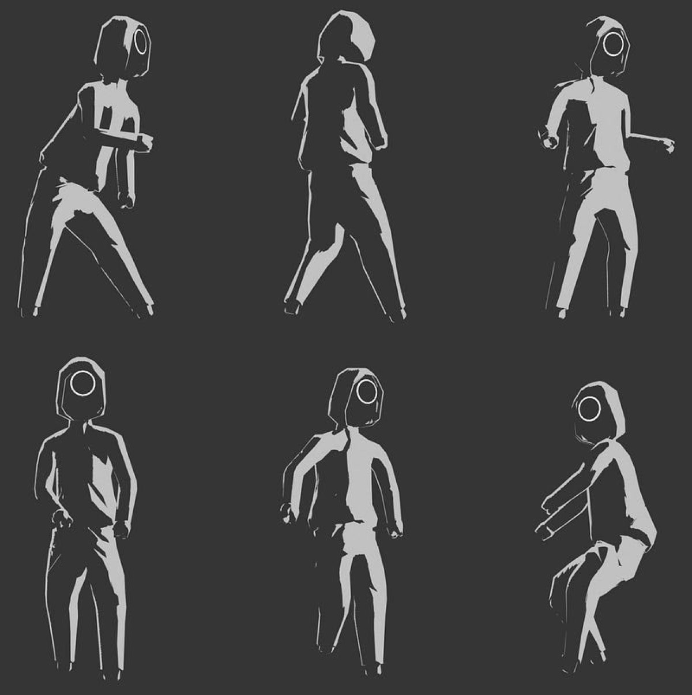
Reading the Body Language: How Autism Affects Motion and Social Perception
Read article →New Tech Reveals How Autism Disrupts Brain Cell Communication - and What That Could Mean for Future Treatments
Read article →Finding Calm Together: How Mindfulness Supports Autistic Children and Their Parents
Read article →
Noora: The AI Social Coach Teaching Empathy to Autistic Teens and Adults
Read article →Spectrum Bluegrass: How Bluegrass Music is Bringing the Autism Community Together
Read article →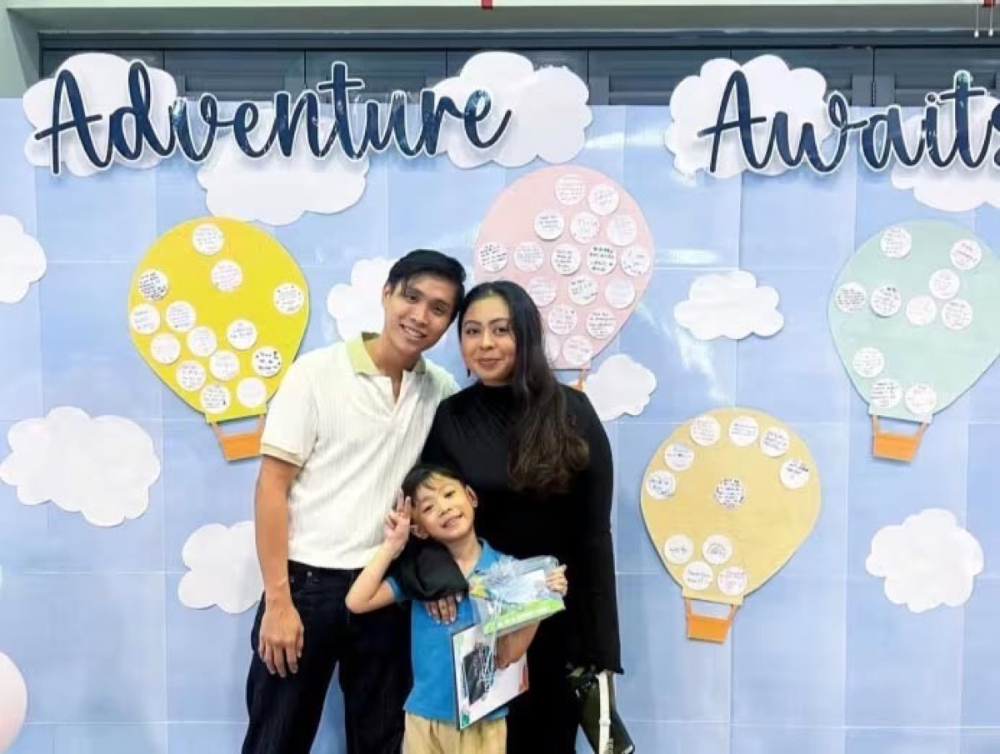
From Challenge to Connection: How One Mother's Journey Led to Visual Support Cards for Non-Verbal Autistic Kids
Read article →Virtual Autism: What Is It - and How Can We Prevent It?
Read article →Aging on the Spectrum: Many Autistic Adults Need Lifelong Support
Read article →Mapping Autism's Brain Patterns: Insights from Global MRI Studies
Read article →Can EHRs Detect Autism Sooner? New Research Shows Promising Clues
Read article →Designing With, Not For: How Co-Creation Empowers Autistic Students in Digital Learning
Read article →"Speaking Their Language”: How Culturally Responsive Speech Therapists Support Neurodevelopment
Read article →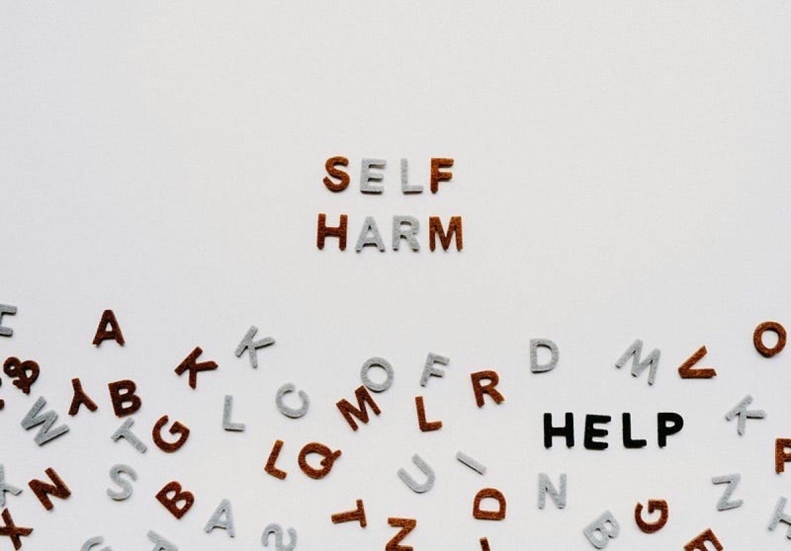
Hunting for Clues: Understanding Self-Harm in Autism
Read article →The Harmful Dating Myth About Autism We Need to Stop Believing
Read article →Autistic Students Are Building Community - It's Time Colleges Listened
Read article →The Future of Home Entertainment
Read article →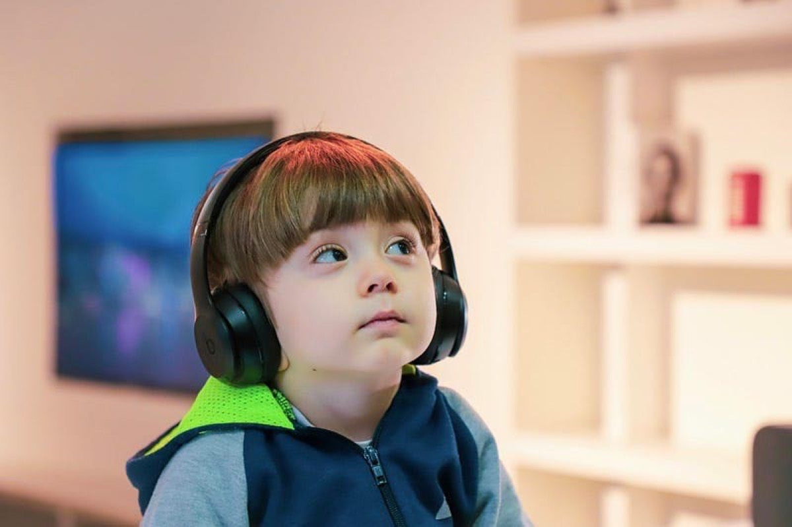
Early Diagnosis Matters: Study Shows Better Outcomes for Autistic Children Diagnosed Before Age 4
Read article →Get Involved: Autism Research Projects Now Recruiting Participants Across the U.S
Read article →New Study Identifies How Early Sensory Processing Shapes Autism Development
Read article →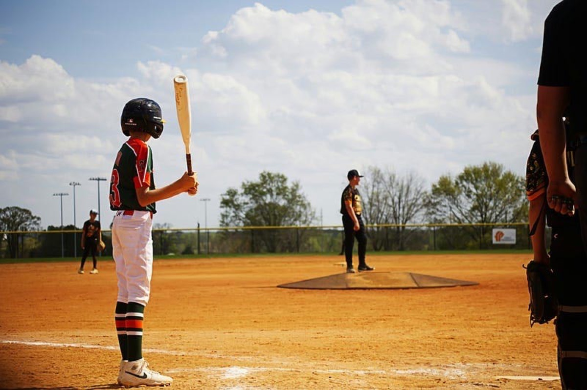
More Than a Gym: How Rhino Sports Academy is Creating a Safe Space for Neurodivergent Kids
Read article →Landmark Study Strengthens Link Between Gut Bacteria and Autism Spectrum Disorder
Read article →Breaking the Spectrum Down: Scientists Identify Genetic Subtypes of Autism
Read article →Silent Struggles: Understanding Stigma Faced by Parents of Autistic Children in Vietnam
Read article →Next-Gen Vitamin D3 Supplement Shows Promise in Improving Core Autism Symptoms
Read article →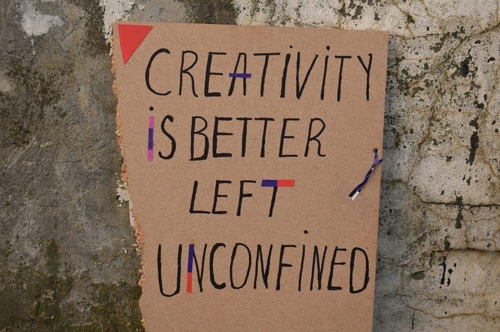
Neurodivergent Talent Isn't a Trend - It's the Future of Innovation and Creativity
Read article →No One-Size-Fits-All: Rethinking Support for Autistic Adults
Read article →When Screens Steal Peace: The Mental Health Impact of Screen Time on Kids
Read article →CBD and Autism: Promising Potential, But More Research Needed
Read article →Hidden in Plain Sight: Recognizing the Signs of Undiagnosed Autism in Adults
Read article →Moments of Joy: What Truly Lights Up the Autistic Mind
Read article →Whose Story Gets Told? Rethinking Diversity in Autism Research
Read article →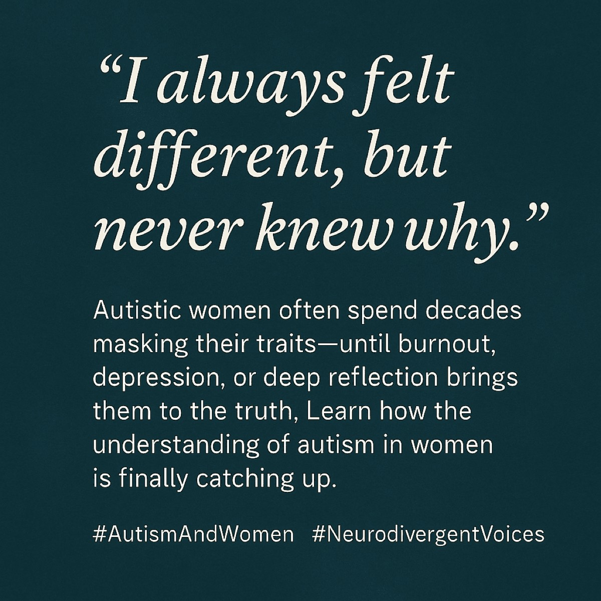
Unmasking the Truth: Autism and the Inner Lives of Women
Read article →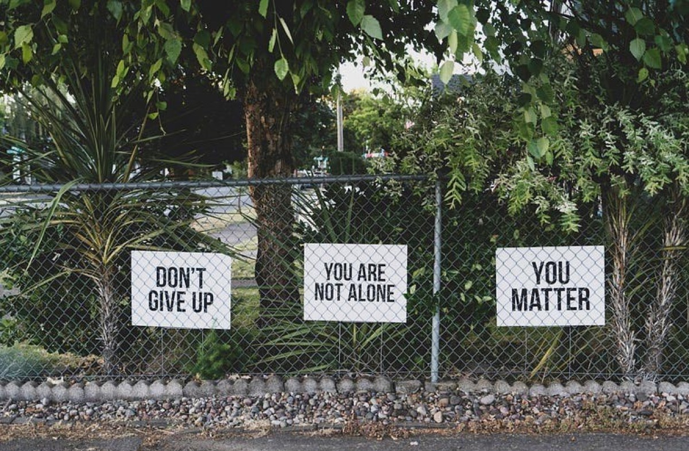
Bridging the Gap: Tackling the Mental Health Crisis in the Autistic Community
Read article →Imagination or Reality? How the Brain Tells the Difference - and Why It Matters
Read article →Groundbreaking Study Reveals Autistic Adults Face Major Barriers to Healthcare Access
Read article →Gatekeeping Autism: Why It's Harmful - and Has to Stop
Read article →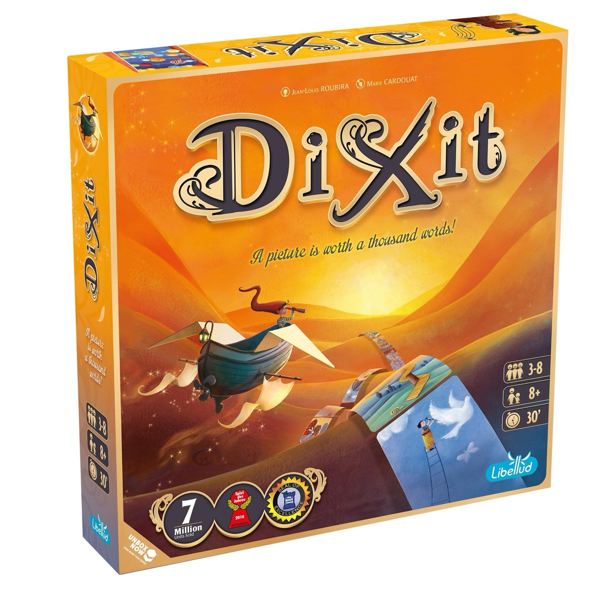
A Board Game That Gives Autistic Voices a Seat at the Table
Read article →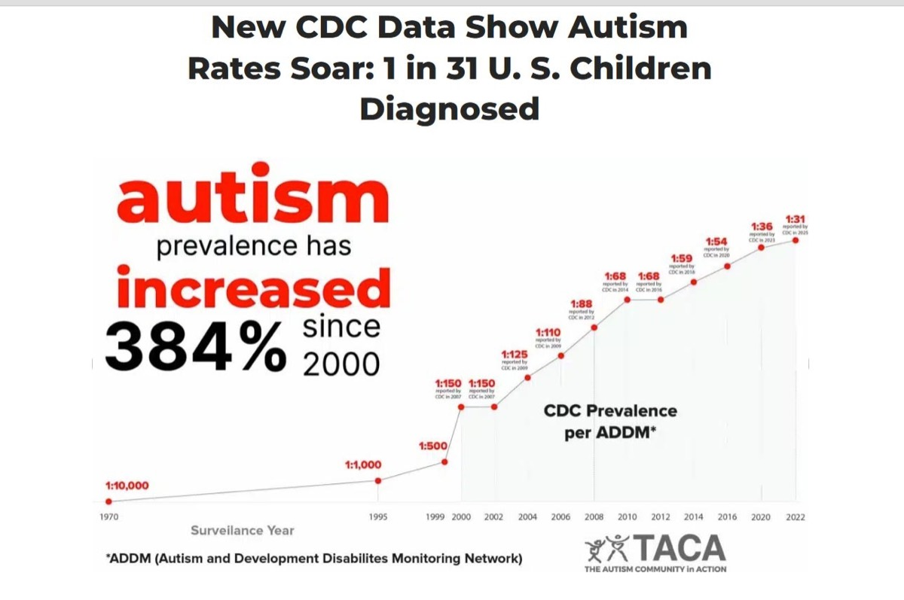
Is There an Autism Epidemic? What the Data Really Say
Read article →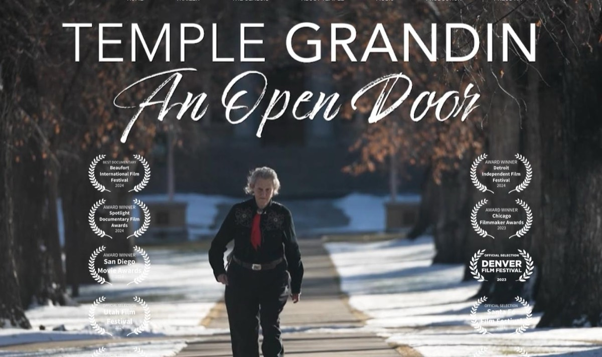
Temple Grandin: A Trailblazer Changing How the World Sees Autism
Read article →Autism Research Breakthroughs Are Transforming Pediatric Care
Read article →Parents of Autistic Children Face Higher Stress - Here's How We Can Help
Read article →Do You "Grow Out" of Autism? Understanding Lifelong Neurodivergence
Read article →Now There's Something Else to Do in Vegas: Creativity Is the New Formula for Life
Read article →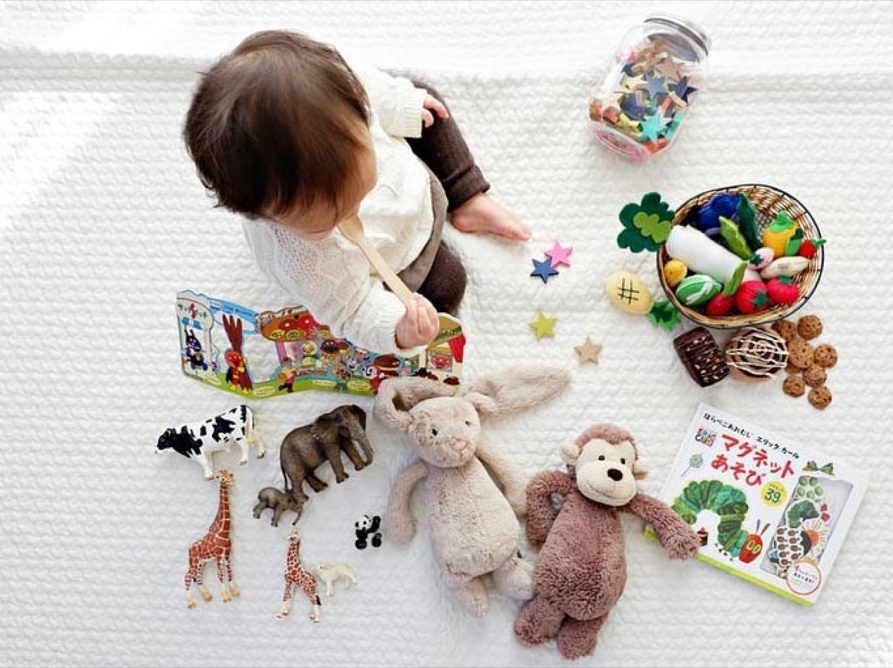
New Study Finds No Sex Differences in Autistic Toddlers at Time of First Diagnosis
Read article →Empowering Young Voices: How Child-Led Therapy Enhances Autism Support
Read article →Autistic Intelligence: Evolution's Hidden Advantage
Read article →Imagination Over Degrees: How Neurodiversity Is Driving the Future of Tech Innovation
Read article →Anupam Kher's Tanvi The Great Shines a Spotlight on Neurodiversity at Cannes 2025
Read article →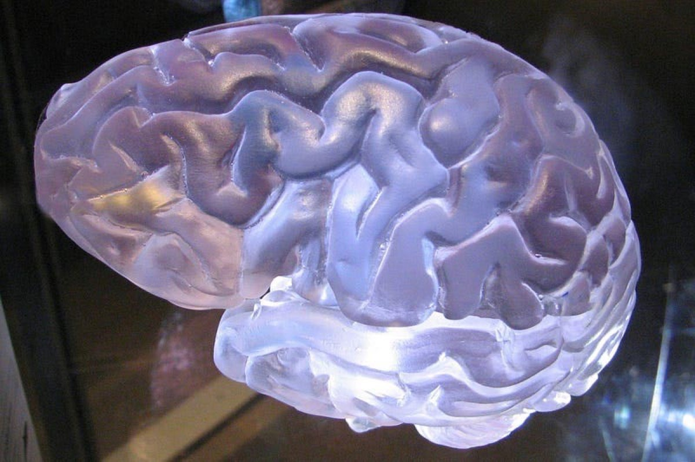
Brain Inflammation Linked to Repetitive Behaviors in Autism and OCD
Read article →Low Vitamin D at Birth Linked to Increased Risk of Autism and Other Neurodevelopmental Disorders
Read article →Celebrating Neurodivergent Creativity: Rutgers’ RCAAS Art Gallery
Read article →The Silent Strength of Mothers Raising Children with Autism
Read article →Summer’s Coming — FAU Releases First-of-its-Kind Water Safety Guide for Autism Families
Read article →New Research Database for Autism Announced
Read article →Unlocking a Hidden Talent Pool: Why Neurodivergent Workers Are the Future of the Workforce
Read article →Six Years On: Addressing Unlawful Exclusions of Autistic Students in Scotland
Read article →A Sanctuary for All: St. Joseph Church’s Sensory Room Embraces Neurodivergent Worshippers
Read article →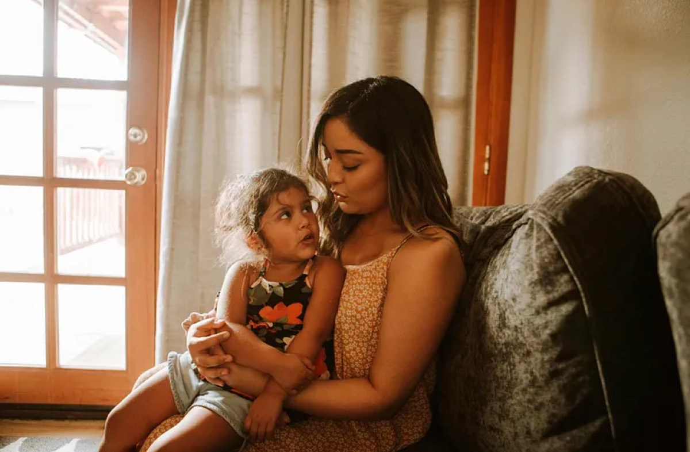
Why Autism in Girls Has Been Overlooked for Decades
Read article →The Multifaceted Nature of Childhood Insomnia: Insights and Implications
Read article →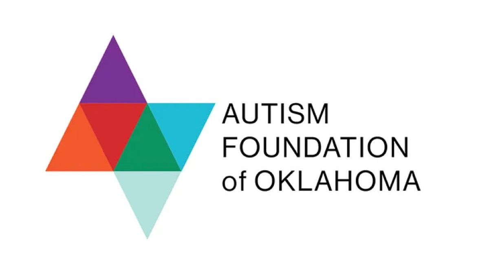
Enhancing Social Programs for the Neurodivergent in Oklahoma
Read article →LifeWorks for Autism Expands Independence-Building Program
Read article →Legacy MD Enhancing Care for Neurodivergent Children
Read article →Forgotten and Friendless: Adults on the Autism Spectrum
Read article →How Special Education Failed Me — A Call for Reform
Read article →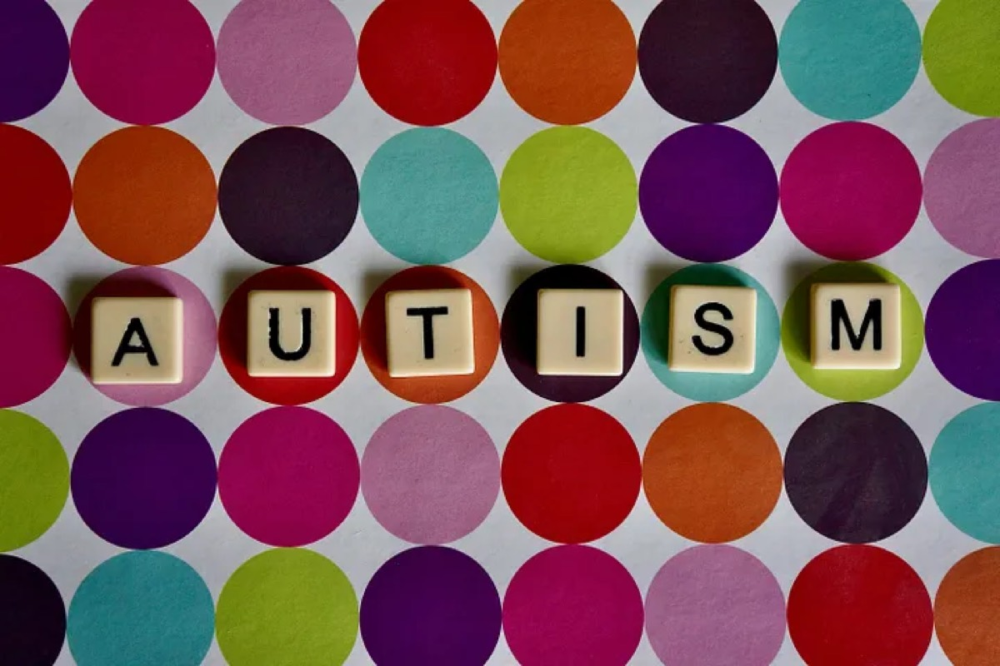
The Journey of an Autistic Advocate: From Diagnosis to Defying Expectations
Read article →Gaming Addiction: Insights from Teen Brain Studies
Read article →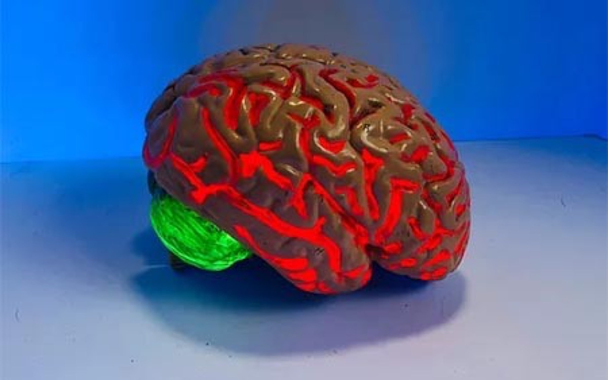
Unlocking the Brain’s Reward System: New Insights into Autism and ADHD
Read article →Concerning Report on Screen Time
Read article →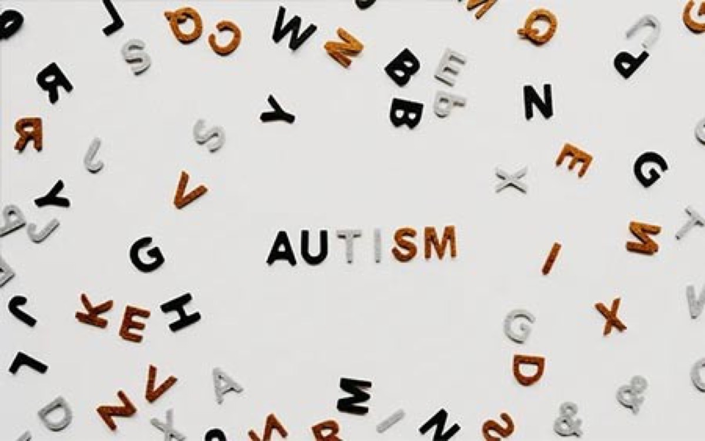
Great New Resource Announced!
Read article →Screen Time and Toddlers: The Language Development Concern
Read article →The Power of Puppetry: Using Negative Space to Evoke Emotion
Read article →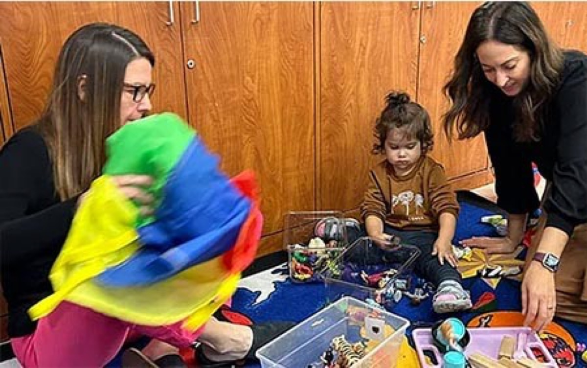
Playgroups Where Neurodiverse Kids Can Truly Be Themselves
Read article →Understanding Delayed Autism Diagnosis: A Data-Driven Approach
Read article →A New Autism Test Using Hair Strands Raises Hope and Questions
Read article →Early Autism Detection Revolutionized with EarliPoint Technology
Read article →Exploring the Link Between Environmental Pollutants and Autism Spectrum Disorder
Read article →Exploring Literature Through a Neurodivergent Lens
Read article →The Cognitive Benefits of Bilingualism for Children with Autism
Read article →Using AI to Decode Autism: A New Frontier in Communication
Read article →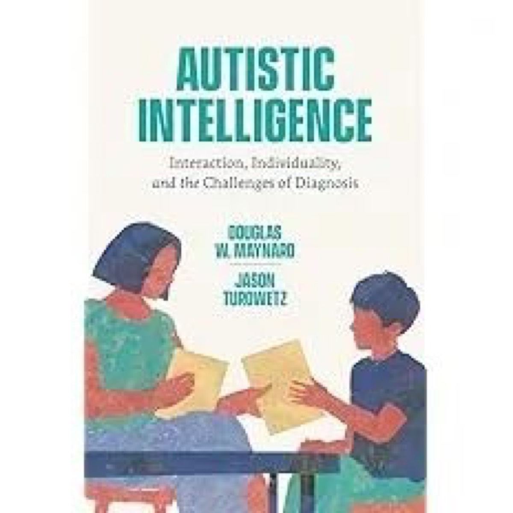
Book Review: Autistic Intelligence: Interaction, Individuality, and the Challenges of Diagnosis
Read article →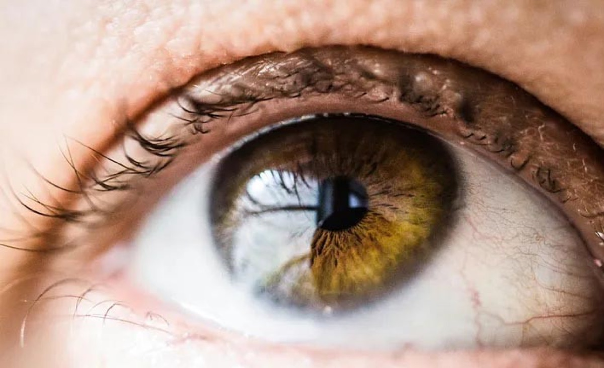
Understanding Autism Through Eye Movements: A New Frontier
Read article →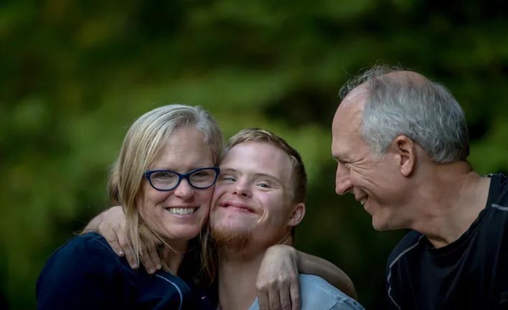
A Paradigm Shift in Autism: Embracing Diversity and Building Adaptive Environments
Read article →Unlocking Potential: Autistic People as an Underutilized Talent Pool
Read article →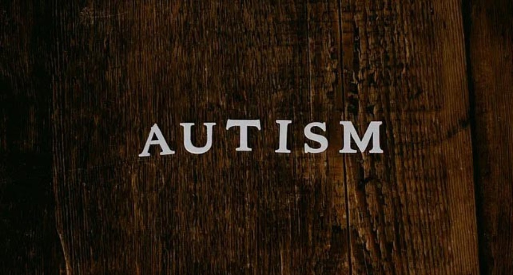
Autism CARES Act Extended: What It Means for the Autism Community
Read article →Exploring the Unique Connection Between Autism and Comics
Read article →Current Autism Research Projects
Read article →No articles match that search.
Experience a story.
Talk to us.
Building the infrastructure that enables every nervous system to thrive.